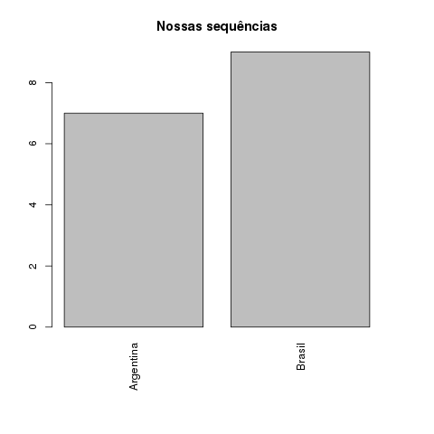
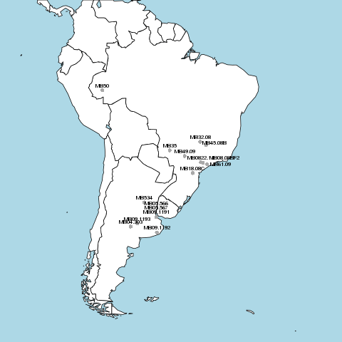
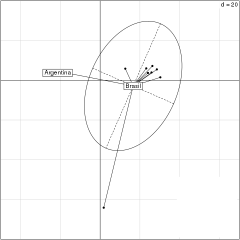
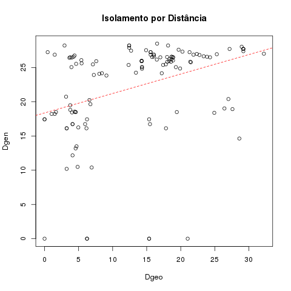
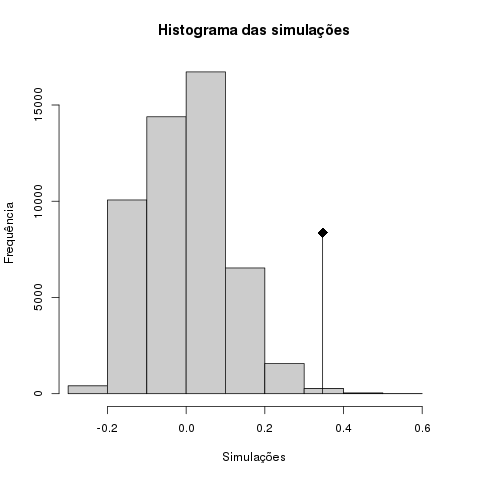
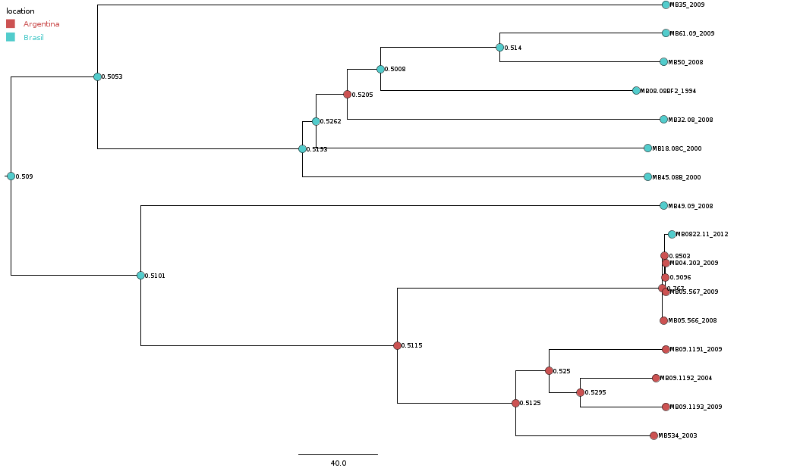
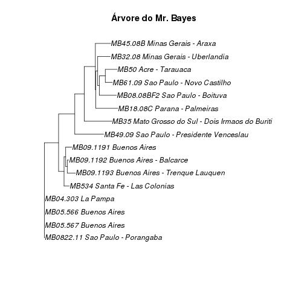
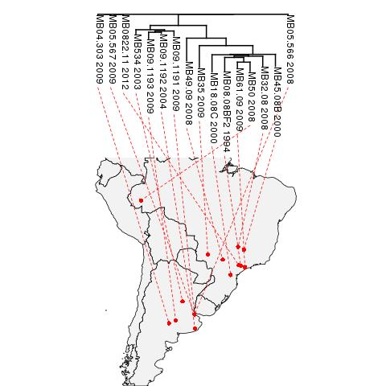
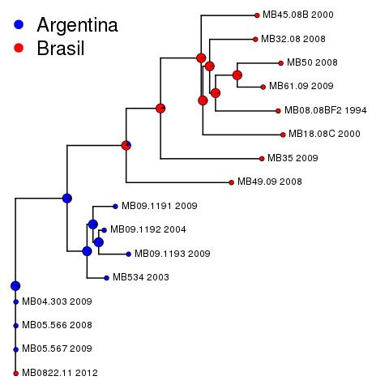
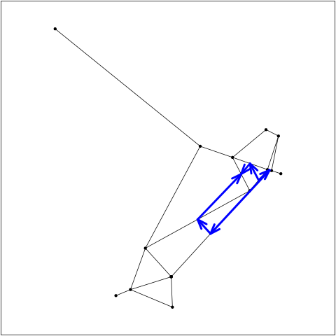

Distância entre as sequências. Modelo. "Kimura’s 2-parameters distance”, has the same underlying assumptions than the Jukes–Cantor distance except that two kinds of substitutions are considered: transitions (A <-> G, C <-> T), and transversions (A <-> C, A <-> T, C <-> G, G <-> T)."
0822.11 05.567 05.566 04.303 534 09.1193 09.1191 09.1192 49.09 35 18.08C 45.08B 08.08BF2 32.08 61.09
05.567 0.000
05.566 0.000 0.000
04.303 0.000 0.000 0.000
534 0.067 0.067 0.067 0.067
09.1193 0.083 0.083 0.083 0.083 0.043
09.1191 0.073 0.073 0.073 0.073 0.035 0.041
09.1192 0.062 0.062 0.062 0.062 0.025 0.026 0.024
49.09 0.162 0.162 0.162 0.162 0.150 0.167 0.159 0.149
35 0.175 0.175 0.175 0.175 0.167 0.183 0.176 0.166 0.182
18.08C 0.214 0.214 0.214 0.214 0.201 0.219 0.209 0.202 0.184 0.168
45.08B 0.184 0.184 0.184 0.184 0.174 0.189 0.177 0.173 0.177 0.148 0.101
08.08BF2 0.196 0.196 0.196 0.196 0.185 0.202 0.190 0.185 0.188 0.148 0.106 0.093
32.08 0.185 0.185 0.185 0.185 0.174 0.192 0.180 0.174 0.169 0.145 0.094 0.080 0.083
61.09 0.190 0.190 0.190 0.190 0.179 0.198 0.187 0.180 0.171 0.144 0.086 0.082 0.080 0.063
50 0.204 0.204 0.204 0.204 0.192 0.210 0.200 0.193 0.187 0.159 0.102 0.088 0.087 0.082 0.051




Beast: 


Reconstrução ancestral: 
